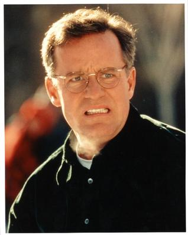
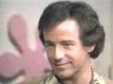
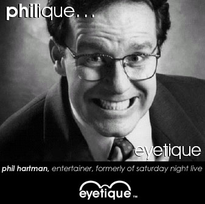
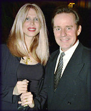
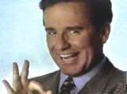
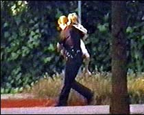
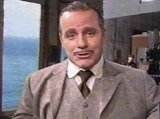

rotten > Library > Biographies > Entertainers > Actors > Phil Hartman
Phil Hartman
Phil Hartman (September 24, 1948 - May 28, 1998)
Surely you remember
the voice of Phillip Edward Hartman from any Simpsons episode featuring
Troy McClure, monorail broker Lyle Lanley, or Lionel Hutz the "law-talking
guy." Possibly you relished in his role as Captain Carl on Pee-Wee's Playhouse, and of course you enjoyed his Broadway-caliber performance
on NewsRadio as radio personality Bill McNeal.
He was immensely watchable - perhaps the only adult male pitchman in television
history capable of keeping your finger off the mute button. A full thirty seconds
of Phil Hartman was considered by anyone's standards to be television gold,
and he appeared in ads for 7-Up, 1-800-COLLECT, Atari, Sony, McDonald's, M&Ms,
Budweiser, and numerous others. It may be impossible to calculate how many individual
commercials he filmed over his lifetime, but estimates are in the hundreds.
Hartman came across as both a salesman and a comedian mocking a salesman.
From 1986 to 1993 on Saturday Night Live, Phil Hartman delivered pitch-perfect,
photo quality impersonations of Bill Clinton, Frank Sinatra, Ed McMahon,
Ronald Reagan, Lee Iacocca, Phil Donahue, Ted Kennedy, Charlton Heston,
Michael Eisner, Lieutenant Worf, Liberace, Peter Graves, Roger Ebert, Michael
Caine, Oral Roberts, Jim Bakker, Johnny Cash, Andy Griffith, Jimmy Swaggart, Hugh Hefner, Wilford Brimley, G. Gordon Liddy, and Barbara Bush. He was also
skilled at playing Norman Rockwell characters: flat, emotionless everymans completely
devoid of personality. Often he'd convey the enormity of his subject's demeanor
with simple mannerisms and oblique stares.
Hartman was married three times, and his marriages didn't last long. "He
would disappear emotionally," says Lisa Strain, wife number two. "Phil's
body would be there, but he'd be in his own world. That passivity made you crazy.
And when I'd protest, he'd say, 'you're getting in the way of my career, and
this is who I am and what it's going to be like.'"
Phil Hartman may not belong in the Rotten Library, but his wife does.
Brynn Hartman became pregnant on their third date, and she and Phil got married.
Phil supposed he was a little "obligated," to put it one way, but
he settled into family life with all the gentle complacence of one of his mild-mannered
characterizations. They had two children, Sean and Birgen.
Brynn was possessive of Phil, insanely jealous of his success, and exhibited
hostility toward other women. She despised his fan mail, and she especially
hated Phil's ex-wife. At times she made comments to Hartman's SNL co-star
Jan Hooks that maybe Hooks and Phil were married "on some other level".
Brynn had trouble controlling her anger, and often she tried to get other people's
attention by losing her temper. The couple had been separated more than once,
and at times Phil had to physically restrain her. She
battled drugs and alcohol for much of her adult life, and she spent five months
in a Malibu rehabilitation center for cocaine abuse. Phil began to confide in
others that he wanted out of their ten-year marriage - but he wouldn't just
give her a divorce. He made it clear that if she started using drugs again,
he'd end the relationship.The couple's arguments followed a familiar pattern:
she'd fly off the wall to get his attention, and he'd respond by falling asleep.
On May 28th, 1998, Brynn returned home from a night out drinking. Sometime before
3:00 a.m, she shot Phil execution-style three times as he lay under the covers:
twice in the head, and once in the chest. She used the revolver he'd given to
her as a gift. Sean, who'd been upstairs, thought he'd heard the slamming of
a door.
Under the influence of cocaine, alcohol and Zoloft, Brynn left the kids alone
and drove to the home of Ron Douglas, a longtime friend. She confessed what
she'd done, but she was nearly incoherent and Douglas didn't believe her. He
thought she was drunk. After she passed out, he searched her purse. It was only
after finding a handgun that he understood. He placed it in a plastic bag, and
suggested he follow her back to the Hartman residence in a separate car.
Brynn locked herself in the master bedroom with Phil. Douglas was allowed a
brief look at the body, before going into the hallway and dialing 911.
Police dispatcher:
Emergency operator 614.
Ron Douglas: Yeah, hi, this is 5065 Encino Blvd. And, um, I
was called over to the residence. I think there's been a shooting here.
Dispatcher: OK, do you see a victim?
Douglas: Yes.
Dispatcher:
OK, hold on for the paramedics, OK? One moment.
Douglas: OK.
Dispatcher: I want you to stay on the line.
Douglas: OK.
Fire dispatcher: Fire Department emergency operator, how may
I help you?
Douglas: Yeah, hi, there's been a shooting at 5065 Encino Blvd.
Fire dispatcher: How many people are shot?
Douglas: Just one, and um ...
Fire dispatcher: Do you know what part of the body?
Douglas: I think around the head and the neck. I just got here.
Fire dispatcher: The person who shot him, is he still around?
Douglas: Yeah, she's his wife.
Fire dispatcher: (unintelligible) the wife shot him and they're
both there?
Douglas: Yeah.
Fire dispatcher: Is she hurt at all?
Douglas: I'm not sure. I'm trying to calm her down. OK?
Police dispatcher: Hello, sir?
Douglas: Yeah.
Dispatcher: Did, uh, was this on purpose or was this an accident
or what sir? Do you know what happened?
Douglas: I have no idea. ... She was drunk. She said she killed
her husband and I didn't believe her.
Dispatcher: OK, are they both there right now?
Douglas: You're right. Now, can you trace this address because
I'm not sure?
Dispatcher: All right, where's the weapon now?
Douglas: It's in my hand because, um, she brought it to my
house.
Dispatcher: What's your name sir?
Douglas:
My name's Ron, Ron Douglas.
Dispatcher: All right sir, we're going to get the officers
on the way.
Douglas: OK.
When authorities arrived, the front door of the Hartman house was ajar. They
escorted Douglas outside right away. They found Sean Hartman, age 9, and removed
him as well. When police returned to remove Birgen, age 6, they heard a single
gunshot from the master bedroom.
There were no signs of a struggle. Hartman was found wearing shorts and a T-shirt,
lying sideways on the bed. His wife lay next to him with a gunshot wound to
her head. She'd obtained a second revolver. Relatives of the Hartmans released
a statement.
"Phil and Brynn were a loving couple, devoted to each other and their
children. This tragedy is not indicative of who she was or who they were together."

Phil Hartman directed in his will that he be cremated. His ashes were scattered
over Santa Catalina Island's Emerald Bay. It was further agreed that the first
guardian who agreed to take care of Sean and Birgen would be awarded $50,000.
According to the executor of Hartman's estate, Zoloft manufacturer Pfizer Inc.
and Brynn Hartman's psychiatrist, Arthur Sorosky, were at fault for
Hartman's death. A wrongful death suit would be filed against them both.
Sean and Birgen are now in the care of family members. Each
will receive a third of their inheritance when they reach age 25 (or obtain
a bachelor's degree from a four-year accredited university). They get half their
inheritance when they turn thirty, and the remainder of Phil Hartman's assets
and reputation when they turn 35.
Pornopolis |
Rotten |
Faces of Death |
Famous Nudes
|